Exercise 2.1 - Create the Inspection
In this exercise you will be able to:
- Create an Inspection on your phone
- Conduct the Inspection
- See your inspections results on a real-time Dashboard
Before you begin, make sure you followed the steps in the Prerequisites page pertaining to the app.
Exercise 2.1 - Create an Inspection
In this exercise, we will be creating an inspection that will be able to identify when an aluminum can has a dent or does not have a dent.
-
Go to the MVI Mobile app and click the sign in the top right corner of your screen.
-
Name your Inspection and select the project we previously created in Exercise 1.3.
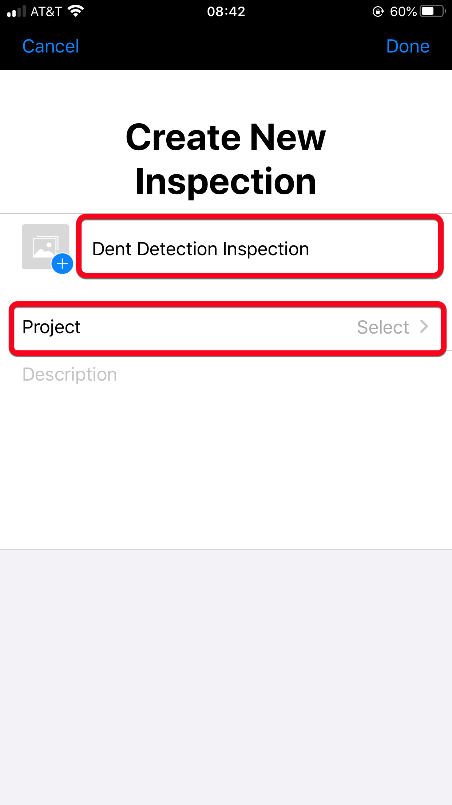

-
Then select Model, and the Dent Detection Model.
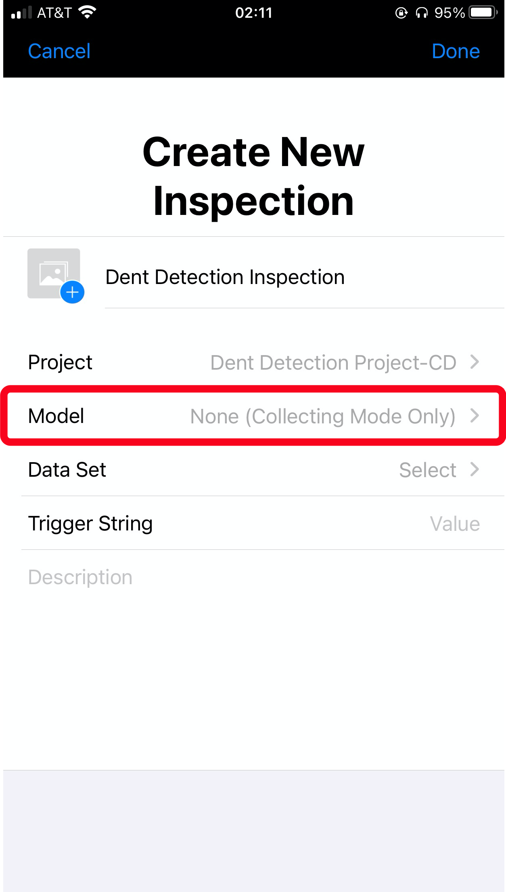 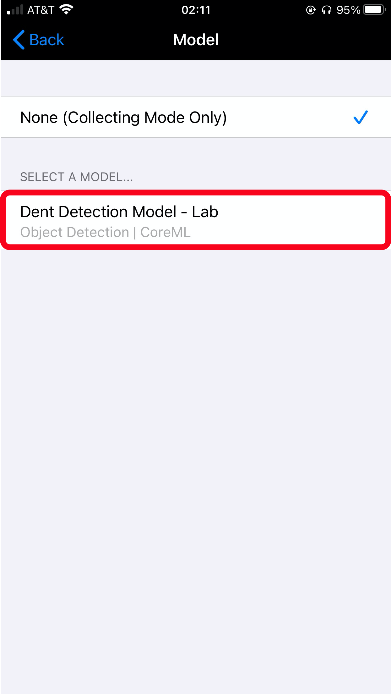
-
After you select the model, select Set Thresholds.
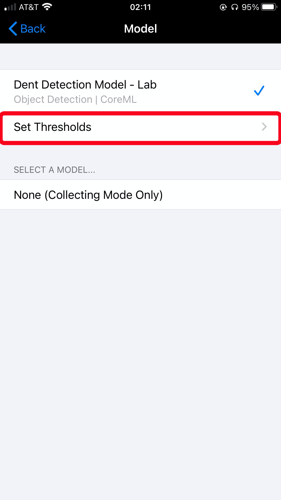
-
Put Ignore Results Below threshold to 70%.
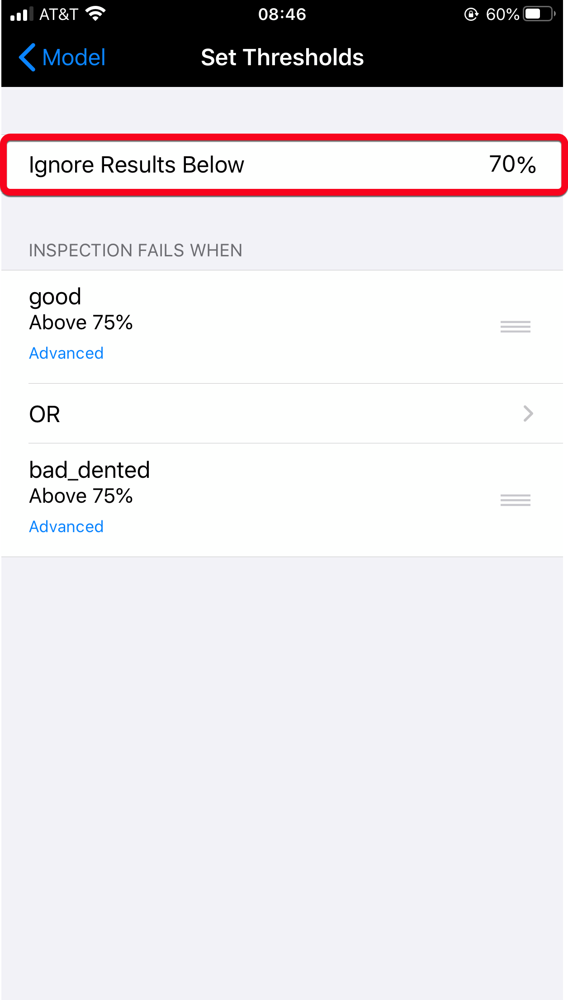
-
Select Advanced under good and switch the No Action button to green.
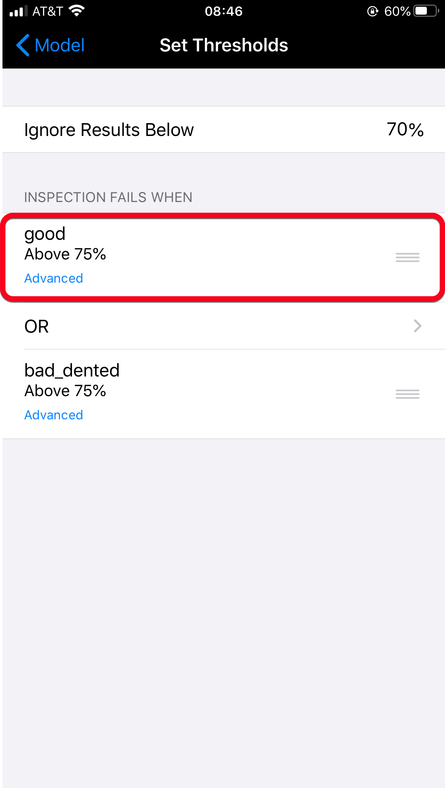 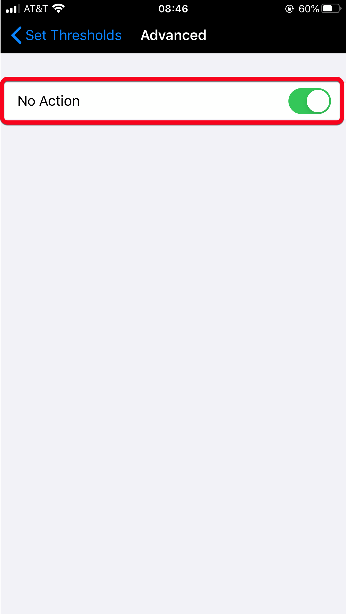
-
Go back to Set Thresholds and select Advanced under bad_dented.
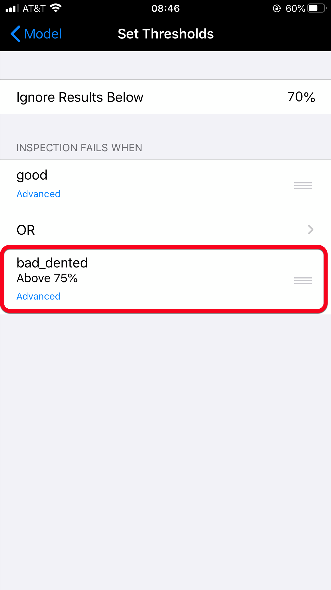
- Put bad_dented Threshold to 70%. Then, select Additional Rules.
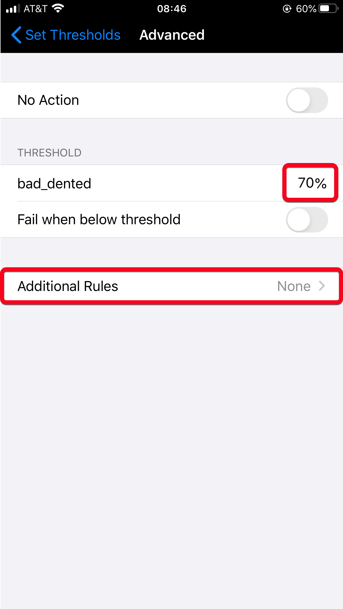
- Select Expected Count and put 0, then go back to Set Thresholds.
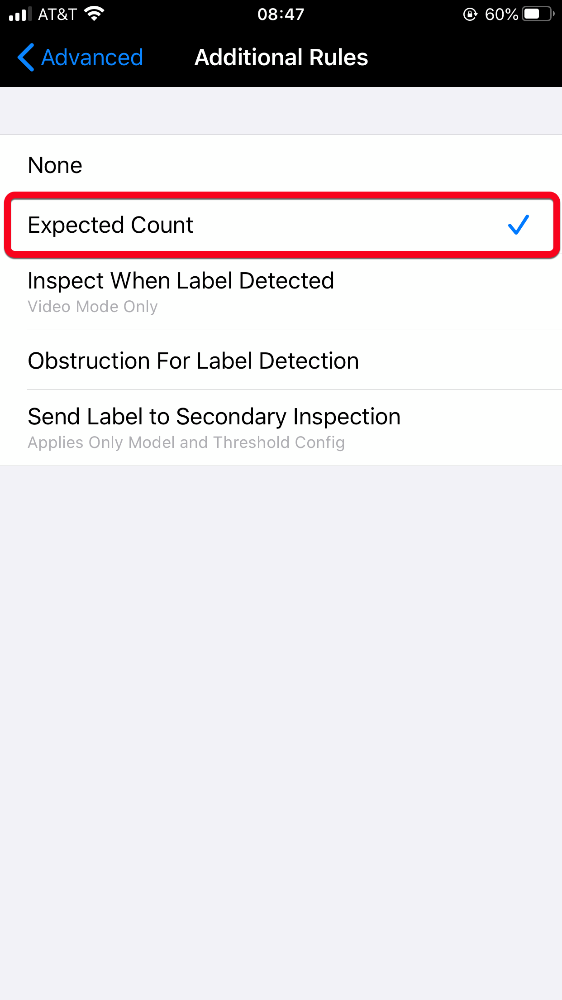 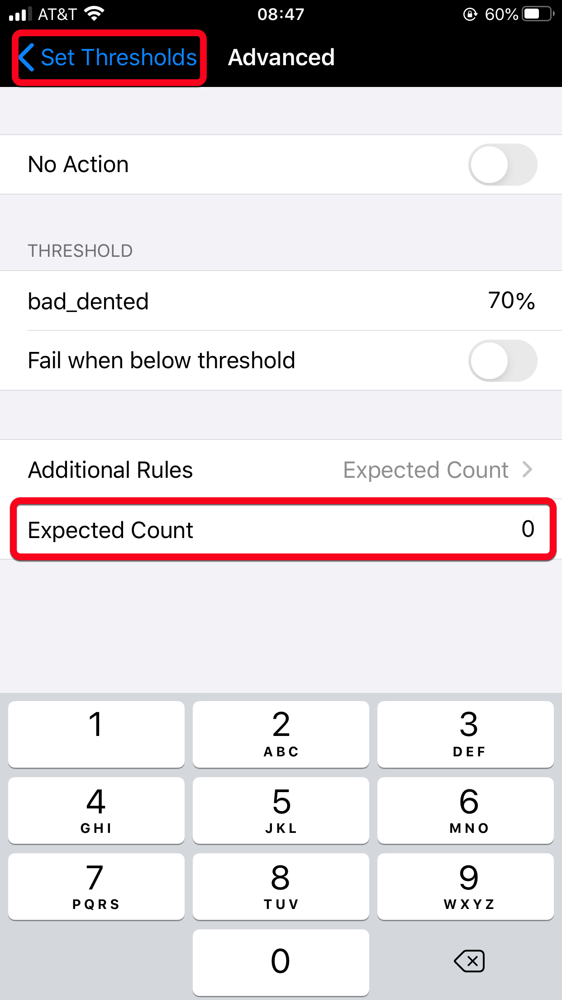
-
-
Select Model to go back to your inspection.
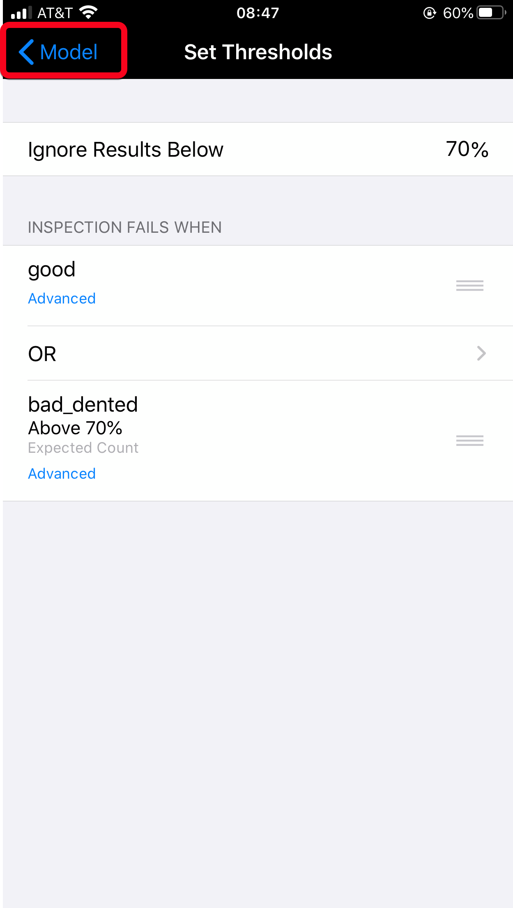
-
Now, select Data Set and Create a New Data Set.
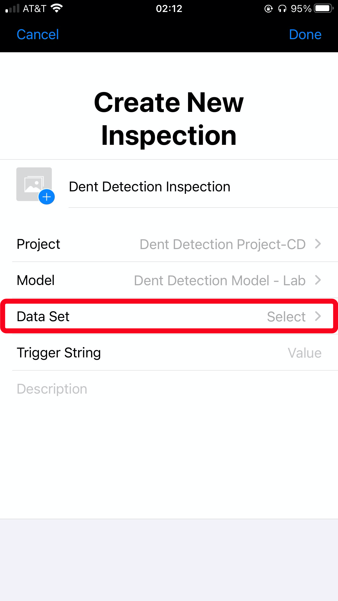

- Name your data set Inspection Results-(YourName) and select Done.
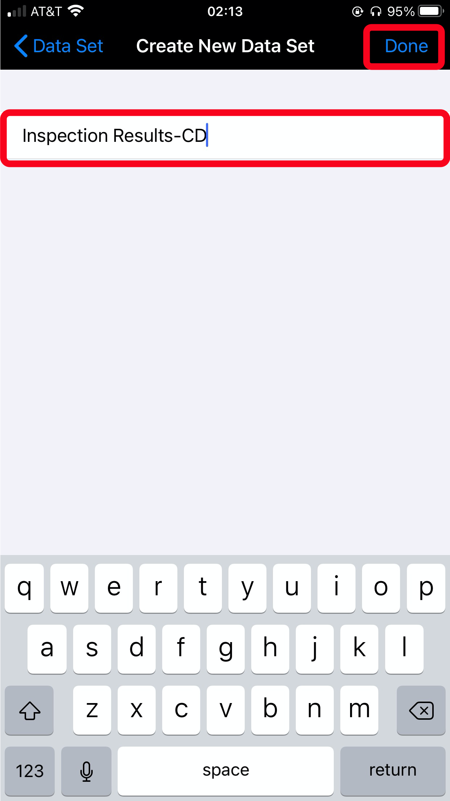
-
You will be brought back to the main inspection screen, then click Done.
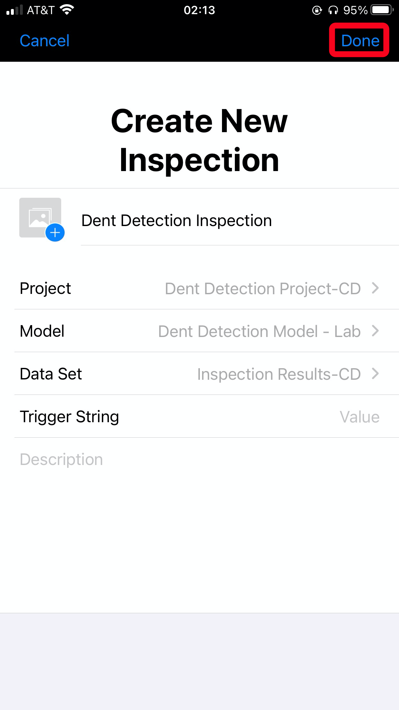
-
Click on your newly created inspection and wait for your inspection to finish downloading.
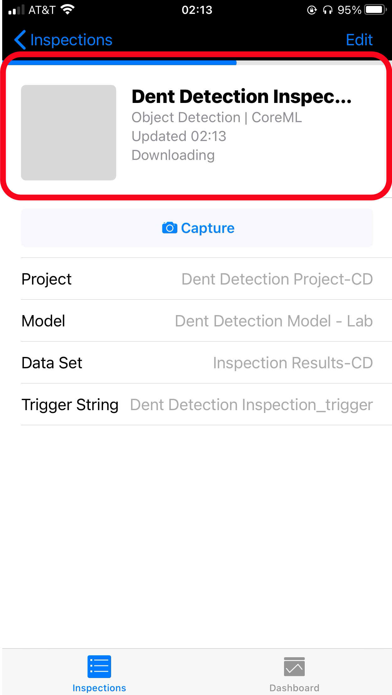
-
Once it is finished downloading, you can move on to the next exercise.
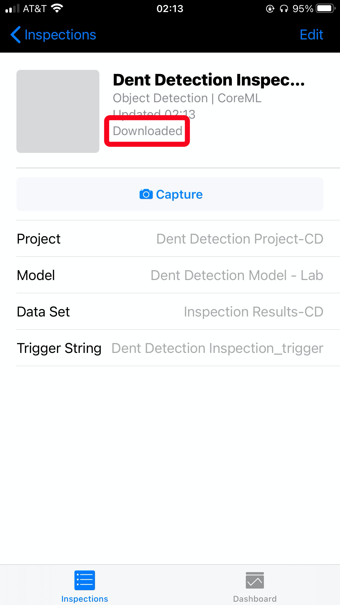
Congrats, you have created an inspection on Maximo Visual Inspection Mobile!